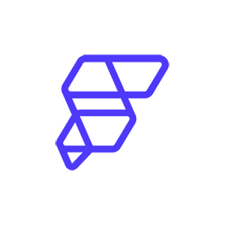

Developed a prototype attendance system using Laravel and Laragon to enhance accuracy in student and lecturer attendance tracking. This project enhance my skills in web development and database management.
Participated in the Mastering Flutter workshop organised by the Software Engineering Club (SEC), where I gained hands-on experience in Flutter development using  FlutterFlow
Projects I built during the workshop:
✔️ Food Delivery App
✔️ E-wallet App
Designed and built an Arduino-based floor sensor prototype to help monitor rising water levels in flood-prone areas. This project gave me the opportunity to explore the integration of hardware and software solutions for real-world problems.